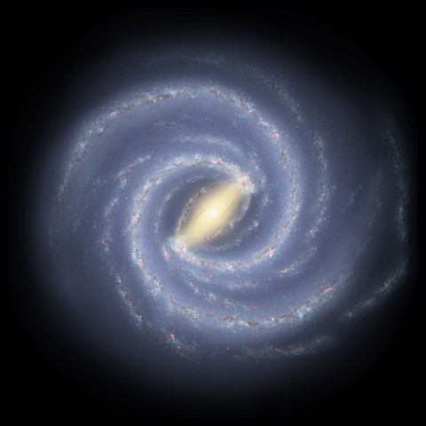

Milky Way Disc

Rotational Velocity Plot
Drag the cursor along the rotation curve — or drag the red circle on the galaxy to resize the measured region. Either control can also be selected and moved with the arrow keys; Home and End jump to the ends of the curve, and Page Up and Page Down take larger steps.